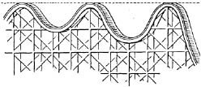
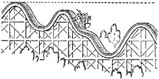

İndiçıktının herkesçe sevilen o coşku verici hareketini inceleyelim: Küçük bir araba, yolun en yüksek noktasına çıkarılmış ya da çekilmiştir. Araba, başıboş bırakılınca, yerçekimi kuvvetinin etkisi ile aşağı doğru inmeye başlar, ve sonra, garip ve dalgalı bir yapısı olan yol boyunca, hızındaki ani değişmelerle binenlerin yüreklerini hoplata hoplata iner ve çıkar. Her indiçıktının bir en yüksek noktası vardır. İndiçıktı, oradan başlar ve bütün hareketi boyunca aynı yüksekliğe asla yeniden ulaşmaz. Hareketinin eksiksiz bir tanımı çok karmaşık olurdu. Bir yanda problemin mekanik yanı, hızda ve konumda zamanla olan değişmeler vardır. Öte yanda ise, sürtünme, ve bundan dolayı, raylarda ve tekerleklerde ortaya çıkan ısı vardır. Söz konusu fiziksel süreci bu iki bakımdan bölmek için biricik haklı gerekçe, önceden üzerinde konuştuğumuz kavramları yeniden kullanabilmektir. Bölme, düşünselleştirilmiş bir deneye varır; çünkü yalnız mekanik bir yanı olan bir süreç, ancak düşünülebilir, ama asla gerçekleştirilemez.
Deneyimizi düşünselleştirmek için, hep hareketle birlikte bulunan sürtünmeyi tümüyle gidermenin başarıldığını düşünebiliriz. Bunu başaran kimse, buluşunu indiçıktıda uygulamak istiyor ve böyle bir indiçıktıyı nasıl kurabileceğini saptamak durumunda kalıyor. Araba, söz gelimi yerden 30 metre yükseklikteki başlangıç noktasından ine çıka ilerleyecektir. Uygulamaya girişen kimse, deneyerek ve yanılarak, şu basit kurala uyması gerektiğini çabucak öğrenecektir: İndiçıktının yolunu, yolun hiçbir noktasındaki yüksekliği başlangıç noktasınınkini aşmazsa, dilediği gibi yapabilir. Arabanın hiç engellenmeden yolun sonuna varması gerekiyorsa, yolun yüksekliğini, kaç kez istiyorsa o kadar, 30 metreye çıkarabilir, ama o yüksekliği asla aşmamalıdır. [Şekil-18]

[Şekil-18]
Gerçek bir indiçıktıda, araba, sürtünme yüzünden başlangıç yüksekliğine asla yeniden ulaşamaz, ama bizim varsaydığımız mühendis, sürtünmeyi dikkate almak zorunda değildir.
Şimdi düşünselleştirilmiş indiçıktıdaki düşünselleştirilmiş arabanın hareketini, çıkış noktasından başlayarak, izleyelim. Araba aşağı doğru inmekte ve hareket ettikçe yere olan uzaklığı azalmakta, ama çabukluğu artmaktadır. Bu tümce, ilk bakışta, bir yabancı dil dersindeki şöyle bir tümceyi anımsatabilir: “Benim hiç kurşun kalemim yok, ama sizin sekiz portakalınız var.” Ama bu tümce pek de anlamsız değildir. Benim hiç kurşun kalemim olmaması ile sizin sekiz portakalınız olması arasında hiçbir karşılıklı-ilişki (correlation) yoktur. Oysa arabanın yerden uzaklığı ile çabukluğu arasında çok gerçek bir karşılıklı-ilişki vardır. Arabanın herhangi bir andaki çabukluğunu, arabanın o anda yerden ne kadar yüksekte bulunduğunu bilirsek, hesaplayabiliriz, ama burada bu noktayı atlıyoruz; çünkü onun nicel karakterini en iyi anlatma yolu, matematiksel formülleştirmedir.
Arabanın en yüksek noktadaki hızı sıfırdır ve o nokta yerden otuz metre yüksektir. En alçak noktada, arabanın yerden yüksekliği sıfırdır ve araba o noktada en büyük hıza ulaşmıştır. Bu olgular başka terimlerle de anlatılabilir. En yüksek noktada iken, arabanın potansiyel (gerilimsel) enerjisi vardır, ama kinetik enerjisi, ya da hareket enerjisi, yoktur. En alçak noktada ise, araba en büyük kinetik enerjisine ulaşmıştır ve potansiyel enerjisi yoktur. Arada kalan bütün konumlarda, belirli bir hızla birlikte belirli bir yüksekliğin bulunduğu yerlerde, arabanın hem hareket, hem de potansiyel enerjisi vardır. Potansiyel (gerilimsel) enerji yükseklikle birlikte artar, oysa kinetik enerji hız arttıkça büyür. Mekaniğin ilkeleri hareketi açıklamaya yeter. Matematiksel tanımda, enerji için ortaya çıkan iki anlatımın (terimin) her biri değişirse de, toplamları değişmez. Böylece, potansiyel enerji kavramı konuma bağlı olarak ve hareket enerjisi kavramı hıza bağlı olarak, matematiksel yoldan ve kesinlikle ortaya konabilir. Bu iki ad, elbette keyfi olarak ve yalnızca kolaylık olsun diye seçilmiştir. Bu iki niceliğin toplamı değişmez ve bu toplam bir hareket değişmezi olarak adlandırılır. Toplam enerji, kinetik enerji artı potansiyel enerji, bir töz gibidir, örneğin, tutarı hiç değişmeyen, ama çok iyi belirlenmiş bir değişim oranına göre dolardan İngiliz lirasına ve sonra gene dolara hiç durmadan çevrilen para gibidir. [Şekil-19]
Sürtünmenin arabayı başlangıç noktası kadar yüksekteki bir noktaya ulaşmaktan alıkoyduğu gerçek indiçıktıda, kinetik enerji ile potansiyel enerji arasında da sürekli bir değişim vardır. Ama burada, toplam, değişmeden kalmaz, tersine küçülür. Şimdi, hareketin mekanik ve ısı yanlarını birbiri ile ilişkili kılmak için, önemli ve gözüpek bir adım daha atmak gereklidir. Bu adımla varılan kavramların ve genellemelerin zenginliği daha sonra görülecektir.

[Şekil-19]
Artık, kinetik enerjiden ve potansiyel enerjiden başka, sürtünmeden doğan ısı da söz konusudur. Bu ısı, mekanik enerjinin, yani kinetik enerji ile potansiyel enerjinin azalmasına uygun mudur? Yeni bir varsayımın zamanıdır. Isı bir enerji biçimi sayılabilirse, belki bu üçünün toplamı, yani ısının, kinetik enerjinin ve potansiyel enerjinin toplamı, değişmeden kalmaktadır. Yalnız ısı değil, ısı ile birlikte enerjinin öbür biçimleri de, tıpkı bir töz gibi, “yok edilemez”dir. Bu, söz gelimi, dolarları İngiliz lirası ile değiştirmek için kendi kendine frank olarak bir aracı payı (komisyonu) ödemesi gereken bir adamın, bu aracı payını harcamaması durumunda, dolarların, İngiliz liralarının ve frankların toplamının belirli bir değişim oranına göre değişmeyen bir tutarı olması gibidir.
Bilimin ilerlemesi, ısıyı bir töz olarak tanıyan eski ısı kavramını yıktı. Yeni bir töz yaratmaya çalışıyoruz: Bu, enerjidir ve ısı onun biçimlerinden yalnızca biridir.